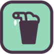

Game data v30 · build 254Sources & research notes
Campaign 2 › Cory's Homework · Level 1 of 3 · Leader: Cory
Upon leaving for his vacation, Dad put Corey in charge of the lumber island, but instead, "Cory" ordered everyone to make cheese.
Starting conditions
- Villagers
- 5 adults, 2 kids · led by Cory
- Workplaces
- Firewood Yard, Foragers' Hut, Sawmill, Warehouse
- Homes
- Brick House, Basic House
- Roads & decoration
- Roadworks Office, Road ×39
- Tools
- Axe · Iron ×4, Hoe · Wood ×4, Wheelbarrow ×3
- Wild trees
- Apple Tree ×37, Ash Tree ×10
- Map resources
- Rock sources ×5 (for a Quarry)
Counted from the map file, leaving out 2 scenery objects (signs, birds, statues, story props). Stockpile numbers are items placed on the map and can differ slightly from what the stockpile shows. Wild tree counts are what the map starts with; trees spread and get felled from there.
Main objectives
| Condition | Target | Required value | What counts |
|---|---|---|---|
| Have | Cheesery | ≥ 2 | Have this many of the target present. |
| Produce / make | Cheese | ≥ 80 | Produce this amount over the scenario; this is a production total, not a stock target. |
| Have | Hydrangea Planter | ≥ 10 | Have this many of the target present. |
Optional objectives
| Condition | Target | Required value | What counts |
|---|---|---|---|
| Produce / make | Smoothie | ≥ 30 | Produce this amount over the scenario; this is a production total, not a stock target. |
| Have | Playground | ≥ 2 | Have this many of the target present. |
What the objectives need
Items the objectives ask for, plus the ingredients to make them, worked back through each recipe using the buildings this map offers. Amounts are rounded up to whole items; allow extra for anything villagers use along the way. Items that can be picked up or harvested from the map stop there rather than being worked back through a factory.
| Resource | Main objectives | Main + optional | Of which asked for directly | Made at |
|---|---|---|---|---|
 Cheese Cheese | 80 | 80 | 80 | Cheesery |
 Smoothie | — | 30 | 30 | Smoothie Stand |
 Fruit Fruit | — | 15 | — | grown in fields: Watermelon (none plantable on this map) |
| Milk | 14 | 14 | — | from the Cheesery |
| Stick | 7 | 7 | — | picked up near trees; the Firewood Yard can also make them |
How the totals were worked out
Construction materials for the buildings themselves are not included yet. Recipe ratios come from each resource's stored recipe; see the resource pages for their evidence.
Strategy
No community strategy has been recorded for this level yet. If you have finished it, the form takes a build order, what to watch out for, and the game version; a maintainer turns it into a page section.
Villager needs
| Need | Active on this map |
|---|---|
| Food | Yes |
| Housing | Yes |
| Community | Yes |
| Fun | Yes |
| Heat | No |
| Wellness | Yes |
| Cooling | No |
| Hydration / thirst | Not set (older map) |
Available buildings & plants
28 buildings and plants can be built on this map from the start. Anything unlocked during play is not included.
Buildings, structures & decorations
Fields & plants
Starting objects & resources
Show 22 starting object types
| Object | Count |
|---|---|
| Axe - Iron | 4 |
| Hoe - Wood | 4 |
| Firewood Yard | 1 |
| Foragers' Hut | 1 |
| Sawmill | 1 |
| Roadworks Office | 1 |
| Ash | 10 |
| Rock Source | 5 |
| AppleTree | 37 |
| Brick House | 1 |
| Basic House | 1 |
| Road | 39 |
| Dads Workshop | 1 |
| Corie´s Boat 1 | 1 |
| Wheelbarrow | 3 |
| Warehouse | 1 |
| Villager Adult | 5 |
| Villager Kid | 2 |
| Leader Cory A | 1 |
| Stick | 16 |
| Fruit | 18 |
| Log | 6 |
History
| Update 12 2024-11-13 | Added with the Cory's Homework story in Campaign 2. official source · link |